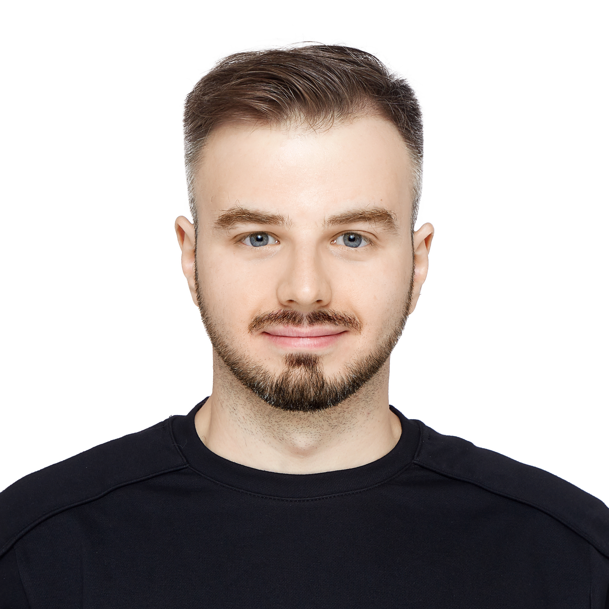

Hypervisor-based Kernel Protection
MemoryRanger
A hypervisor-based security framework that isolates Windows kernel components using Intel VT-x and Extended Page Tables (EPT), protecting kernel memory against unauthorized access.
Operating System Security Researcher
Windows Internals | Kernel Security | Hypervisor-based Protection | Rootkit Detection
LinkedIn / GitHub / Google Patents / IEEE Xplore / РИНЦ
Google Scholar / ORCID / arXiv / DBLP / Scopus / Web of Science / ResearcherID / ResearchGate / OpenReview / Semantic Scholar / eLibrary / RSCI / DsLib.net / Academia.edu

Research Areas
I am an operating-system security researcher with a PhD in Information Security, specializing in Windows internals, kernel protection, hypervisor-based isolation, and memory forensics. I develop and evaluate practical security mechanisms through low-level systems programming and experimental research.
I am an alumnus of National Research Nuclear University MEPhI. My professional background includes cybersecurity research at Huawei Technologies and Binarly. I have presented my work at Black Hat, HITB, and LABScon and supervise student research at MEPhI.
Explore my research projects, publications, and conference talks.
Я кандидат технических наук, исследователь безопасности операционных систем. Мои основные направления — внутренние механизмы Windows, защита ядра, гипервизорная изоляция и анализ оперативной памяти. Разрабатываю и экспериментально исследую механизмы защиты на уровне операционной системы.
Выпускник НИЯУ МИФИ. Работал над исследовательскими проектами по кибербезопасности в Huawei Technologies и Binarly. Выступал на Black Hat, HITB и LABScon, руковожу научными работами студентов МИФИ.
Подробнее: исследовательские проекты, публикации и доклады.
My published research spans hypervisor-based kernel protection, detection of stealth hypervisors, memory forensics, rootkit detection, and Windows endpoint telemetry security. The projects connect research methods to publications, code, and conference talks.
Hypervisor-based Kernel Protection
A hypervisor-based security framework that isolates Windows kernel components using Intel VT-x and Extended Page Tables (EPT), protecting kernel memory against unauthorized access.
Windows Kernel Security
Developed and investigated memory-forensics techniques for detecting kernel-mode rootkits, including hidden processes, drivers, and other concealed system objects. Preliminary experiments demonstrated a ~3× speedup in statistical memory-dump analysis using CUDA-enabled GPU parallel processing.
Virtualization Security & Rootkit Detection
Statistical methods for detecting covert hardware-based hypervisors through instruction-timing analysis, including countermeasures against timing manipulation and measurement fluctuations. Based on PhD research defended in 2012.
Endpoint Telemetry & Evasion
Experimental research into attack vectors targeting Windows Event Tracing (ETW) and Windows Management Instrumentation (WMI), demonstrating weaknesses that can reduce EDR and SIEM visibility.
Selected scholarly works on operating-system security, hypervisor-based protection, kernel memory isolation, and malware detection. For the complete bibliography, see the bibliography below.
Additional arXiv preprints (not numbered)
Selected patent records related to data protection and operating-system security.
US12475250B2 · US20230289465A1 — additional records in the same patent family.
Earlier conferences, publications, and milestones: publication bibliography.
Recent presentations and selected international talks. Historical talks and video recordings are preserved below.
OFFZONE 2026 · Main Track · Moscow, August 21, 2026
Technical research on Windows Desktop security, access controls, and protection of interactive sessions.
Pass the SALT 2026 · July 2026
Presentation on Windows Desktop isolation and related attack surfaces.
HITBSecConf Phuket, 2023
Black Hat USA, 2022
HITB Lockdown 002, 2020
IEEE S&P Workshops / Texas Cyber Summit, 2021


| Year | Conferences and venues |
|---|---|
| 2025 | MEPhI CIB / КИБ Moscow (Russia). |
| 2023 | HITBSecConf Phuket (Thailand). |
| 2022 | Black Hat USA (USA), LABScon (USA), Ekoparty (Argentina), ADFSL (USA), ROOTCON (Philippines). |
| 2021 | Black Hat Europe (UK), IEEE S&P Workshops / SADFE (USA), Texas Cyber Summit (USA). |
| 2020 | HITB Lockdown 002 (Singapore / online), Journal of Digital Forensics, Security and Law (USA). |
| 2018-2019 | Black Hat Europe (UK), ADFSL (USA), Journal of Digital Forensics, Security and Law (USA). |
| 2016-2017 | REcon Montreal (Canada), ADFSL (USA). |
| 2014-2015 | ADFSL (USA), Journal of Digital Forensics, Security and Law (USA). |
| 2012 | Methods and Technical Means of Information Security / MTSOBI, Saint Petersburg (Russia). |
| 2011 | Infoforum (Russia), Youth and Science / MEPhI (Russia), MTSOBI, Saint Petersburg (Russia), Telecommunications and New Information Technologies in Education / MEPhI (Russia), RusCrypto (Russia), ISP RAS seminar (Russia), Bauman MSTU seminar (Russia). |
| 2010 | Infoforum (Russia), MTSOBI, Saint Petersburg (Russia), Youth and Science / MEPhI (Russia). |
| 2009 | Infoforum / Problems of Information Security in Higher Education (Russia). |
I supervise diploma and student research projects in information security at National Research Nuclear University MEPhI. Research topics have included Windows memory forensics, malware detection, ETW-based monitoring, ALPC security, and operating-system protection mechanisms.
Additional academic activity includes participation in the MEPhI State Examination Board. See the student research page and academic service record.
I have reviewed research manuscripts in cybersecurity and computer security, including for the following journals: